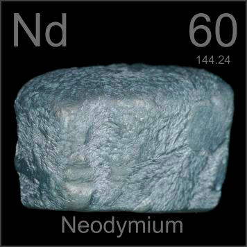

HOME
PREVIOUS
NEXT

Neodymium
Atomic Weight: 144.242
Density: 7.01 g/cm3
Melting Point: 1021 °C
Boiling Point: 3100 °C
Neodymium-iron-boron alloys are the basis for the most powerful permanent magnets, used in headphones, disk drives, and motors, and commonly known as neodymium magnets or rare earth magnets.